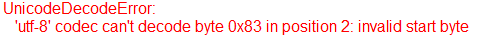

表示DM码读码结果，例如DM码读码工具的输出。
| 分类 | 接口名称 | 接口描述 | |
|---|---|---|---|
| 构造 | GsDMSingleReaderResult | GsDMSingleReaderResult默认构造函数 | |
| 属性 | polylineResult | DM码所在的多边形区域 | |
| resultString | 解码字符串，即DM码结果字符串 | ||
| resultBytesString | 解码字符串，如果字符串中含有日文等编码，需要用该属性获取解码字符串 | ||
| resultStringType | 解码字符串类型 | ||
| resultIsLightOnDark | 是否是亮码暗背景 | ||
| resultDMSize | DM码的2D尺寸 | ||
| resultDMEccType | DM码的Ecc类型 | ||
| resultDMCellSize | DM码的cell尺寸 | ||
| grade | DM码的等级 | ||
| gradeVec | DM码的所有等级 |
功能：构造GsDMSingleReaderResult对象。
参数：无
返回值：无

说明：对于日文编码，可以使用” cp932”或” shift_jis”进行解码，例如：
strResult. decode(“shift_jis”)
功能：DM码评价标准等级，即在不同评价标准下对应的等级。stringVec类型，即可以当作python中list使用，只不过元素都是字符串。
要获取对应评价标准下的评价结果可以使用索引来获取：
| 索引 | 评价分类 | ISO16022 | ISO15415 | AIM | AS9132 |
|---|---|---|---|---|---|
| 0 | SymbolContrastGrade | Y | Y | N | N |
| 1 | PrintGrowthGrade | Y | N | N | N |
| 2 | AxialNonuniformityGrade | Y | Y | Y | N |
| 3 | GridNonuniformityGrade | N | Y | Y | N |
| 4 | FixedPatternDamageGrade | N | Y | Y | N |
| 5 | UnusedErrorCorrectionGrade | Y | Y | Y | N |
| 6 | ModulationGrade | N | Y | Y | N |
| 7 | ScanGrade | N | Y | Y | N |
| 8 | OverallGrade | Y | N | N | N |
| 9 | CellContrastGrade | N | N | Y | N |
| 10 | MinimumReflectanceGrade | N | N | Y | N |
| 11 | DotSizeGrade | N | N | N | Y |
| 12 | DotCenterOffsetGrade | N | N | N | Y |
| 13 | DotOvalityGrade | N | N | N | Y |
| 14 | AngleDistortionGrade | N | N | N | Y |
无
```python result_DM_ls =GvTool.GetToolData(“DM码读码工具_002.所有读码结果”) result_DM = result_DM_ls[0] str_result = (“解码字符串:{}\n解码字符串类型:{}\n是否亮码暗背景:{}\n” “尺寸:{}\nEcc类型:{}\ncell尺寸:{}\n条码等级:{}\n”).format( result_DM.resultString,result_DM.resultStringType, result_DM.resultIsLightOnDark, result_DM.resultDMSize, result_DM.resultDMEccType, result_DM.resultDMCellSize, result_DM.grade)
print(result_DM.gradeVec[0]) #输出SymbolContrastGrade评价下的等级 ```